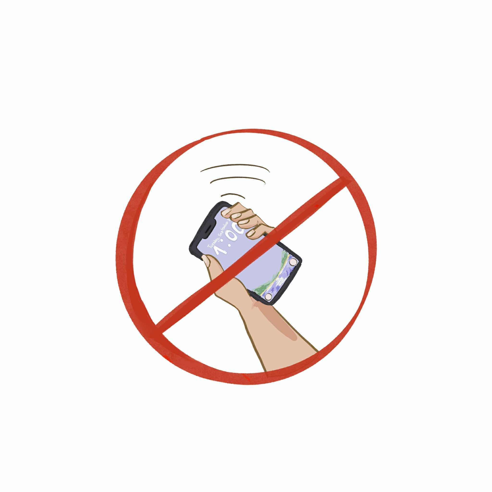

The Regis Publication
THE GADGET USE POLICY
The REGIS Publication, Robert Rivera
Many students at Sacred Heart School-Ateneo de Cebu are violating the Gadget-use Policy by using their devices during school hours.
Teachers, school administrators, and parents hope students will refrain from using gadgets during school hours to help them focus on academics and formation. Students often use their gadgets for purposes unrelated to their studies, distracting them from their responsibilities as students. When the use of devices is allowed, students often become absorbed in scrolling through social media, losing track of time instead of interacting with classmates or completing assignments. This distraction can cause students to miss important lessons and fall behind.

The constant use of gadgets can hinder students from reaching their full potential both inside and outside the classroom, which is why school administrators continue to enforce the policy strictly.
The policy plays an important role in helping the students stay focused, avoid procrastination, and build a stronger connection with classmates and teachers. Setting boundaries ensures that learning will be prioritized and everyone will have a good learning environment. By limiting gadget use during school hours, students can develop better habits that support both their education and overall well-being.
blank